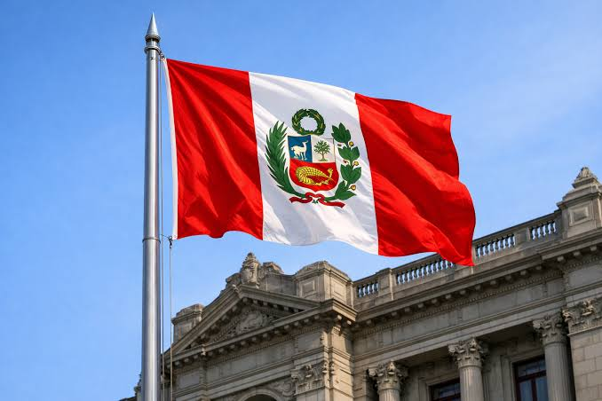
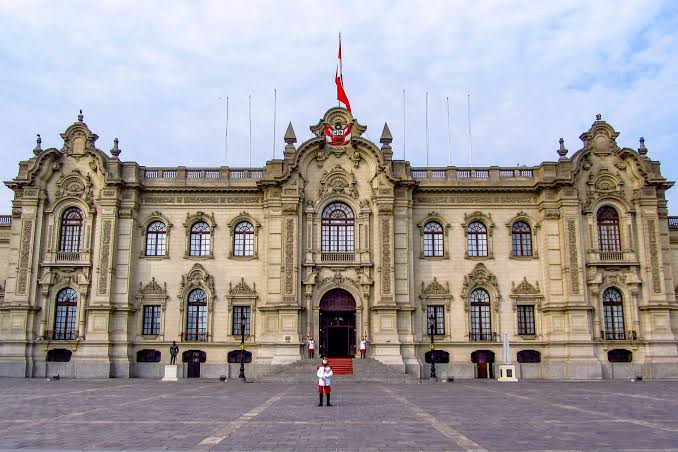
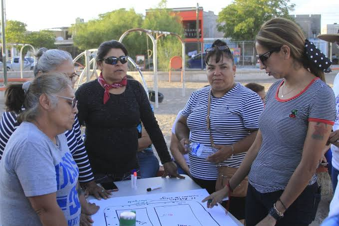

Representar al país
Representa al Perú dentro del territorio nacional y en las relaciones internacionales.
Descubre cómo funciona el Gobierno peruano, qué responsabilidades tienen sus instituciones y de qué manera puedes participar en la construcción de una sociedad mejor.
Una ciudadanía informada fortalece la democracia.

Instituciones distintas, un objetivo compartido: servir a la población.
Los ministerios diseñan y dirigen las políticas públicas de sus respectivos sectores. Explora sus funciones y consulta quiénes los encabezan en el directorio oficial.
Los nombres de los titulares pueden cambiar. La lista de autoridades debe contrastarse con el directorio oficial del Estado peruano.
Consulta el directorio oficial de ministros del Perú.

El presidente de la República es el jefe del Estado y ejerce las atribuciones que le reconoce la Constitución Política del Perú.
Representa al Perú dentro del territorio nacional y en las relaciones internacionales.
Debe respetar y hacer respetar el marco constitucional y las leyes de la República.
Conduce la acción del Poder Ejecutivo y establece prioridades para la gestión gubernamental.
Nombra y remueve al presidente del Consejo de Ministros y, a propuesta de este, a los demás ministros.
Promulga las leyes aprobadas y puede ejercer otras atribuciones normativas conforme a la Constitución.
Ejerce las atribuciones constitucionales relacionadas con la defensa nacional y el orden interno.
El presidente no tiene poder ilimitado. Sus decisiones están sujetas a la Constitución, las leyes y los mecanismos de control establecidos por el Estado.
Es el poder del Estado encargado de conducir el Gobierno, administrar los asuntos públicos y ejecutar las políticas correspondientes dentro de sus competencias.
Jefatura del Estado y dirección del Poder Ejecutivo.
Coordina la política general del Gobierno y el trabajo ministerial.
Dirigen políticas sectoriales como educación, salud, economía, seguridad y ambiente.
Desarrollan funciones técnicas, administrativas y especializadas.
El Gobierno nacional coordina con gobiernos regionales y locales respetando sus competencias.
Establece objetivos, prioridades y planes para responder a las necesidades nacionales.
Administra recursos públicos y pone en marcha programas, servicios y proyectos.
Debe informar sobre su gestión y está sujeto a los controles institucionales correspondientes.
Participar significa involucrarse en los asuntos públicos, proponer soluciones y contribuir al bienestar de la comunidad.

Consulta fuentes oficiales, normas, presupuestos y medios responsables antes de compartir información.
Investiga las propuestas de los candidatos y participa en las elecciones de acuerdo con las normas vigentes.
Participa en asambleas vecinales, audiencias públicas y espacios de diálogo de tu comunidad.
Utiliza los canales oficiales para presentar ideas, peticiones o reclamos de manera respetuosa.
Pide documentos estatales accesibles por ley para conocer decisiones, gastos y proyectos públicos.
Observa el avance de las obras y comunica posibles irregularidades mediante los canales correspondientes.
Colabora con asociaciones, voluntariados, organizaciones estudiantiles e iniciativas comunitarias.
Escucha otras opiniones, argumenta sin violencia y busca soluciones para los problemas comunes.
Identifica un problema de tu colegio o barrio, reúne información y propone una solución concreta.
Consulta estas plataformas para verificar información sobre las autoridades, las instituciones y las normas del Estado.